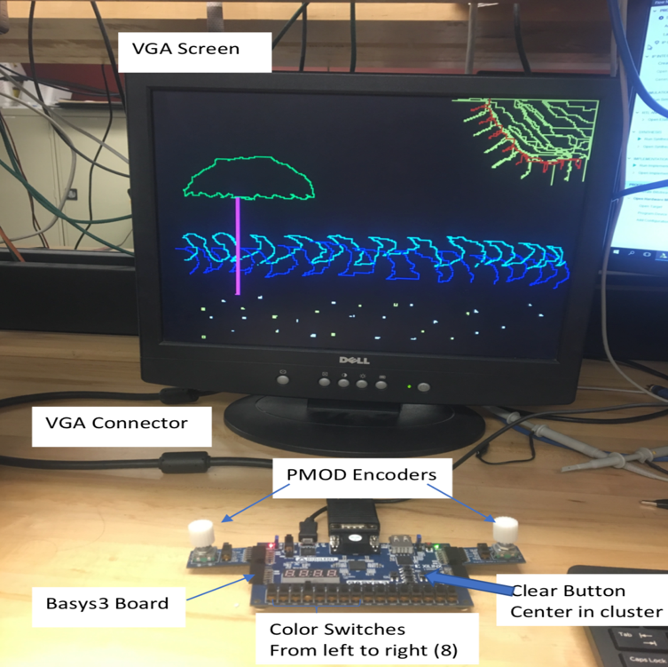

Digital Etch-a-Sketch
a VHDL project building a complex (but fun) state machine using an FPGA board

During my sophomore summer, I was fortunate enough to take ENGS035/COSC056: Digital Electronics. This class truly challenged me to think about coding outside of simply what I could do on a computer and encouraged me to rediscover my passion for building things by hand.
In the scope of the class, we learned about proper digital electronic design and development in VHDL. We started with hard-wiring circuits, truly one of my favorite concepts to study, and worked our way up to coding these circuits. In the labs for the class, we learned how to develop in VHDL and use Vivado, in conjuction with a LOT of work with an oscilloscope, in order to program our FPGA Boards - by the final lab we had created our own digital voltmeters!
For the final project for the class, we had free reign - my partner and I decided to take a trip back to our childhoods and create a digital etch-a-sketch.
Here's the final product:
Although the project came together in the end, the journey sure was not an easy one. While we had programmed an FPGA board before, we had never added our own encoders nor had we ever created a VGA controller. Learning how to debug on this new platform and using oscilloscopes to do so also required a great amount of patience.
See the final report below!